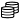

Deep Security Smart Check Deployment Guide
Deep Security™ Smart Check is a container image scanner from Trend Micro™. This guide describes how Smart Check works and how to use the Smart Check console. It contains:
About Deep Security Smart Check
Deep Security™ Smart Check performs pre-runtime scans of Docker™ images to detect OS vulnerabilities and malware, enabling you to fix issues before they reach the orchestration environment (for example, Kubernetes®).
Deep Security Smart Check receives up-to-date threat data from private Trend Micro endpoints. Smart Check obtains malware information from the Trend Micro Smart Protection Network ™ and, for Windows images, detects threats using Trend Micro XGen™ machine learning algorithms. Deep Security Smart Check will find vulnerabilities in these Linux® distributions:
- Red Hat® Enterprise Linux
- CentOS™
- Oracle® Linux
- Ubuntu™
- Debian®
- Alpine™
How does Smart Check fit into a DevOps pipeline?
Deep Security Smart Check provides a valuable step in your continuous integration (CI) or continuous delivery (CD) pipeline.
For example, Jenkins® projects can automatically build, test, and then push Docker images to a Docker registry. Once pushed, the image may be instantly available to run in an orchestration environment. If malware or vulnerabilities exist in the image, then they become a risk when the image is run. Since images are intended to be immutable, the right time to scan the image is when it's first pushed to the registry.
That’s where Deep Security Smart Check fits in – it can scan Docker images in any registry that implements the Docker Registry V2 API. All Deep Security Smart Check operations are available through a documented collection of APIs to simplify integration into your CI/CD pipeline. Deep Security Smart Check APIs can be invoked automatically by your CI/CD system to start scans when an image is pushed to a Docker registry. Scan results are also available through the API.
The Smart Check API includes a Webhook facility that allows CI/CD components to register to receive notifications of scan events, including ‘scan-completed’, allowing you to automate workflows. For example, a Docker image signing service could register to receive scan results and then use those results to decide whether a particular image should be digitally signed and promoted to a “blessed” repository that is available to your orchestration environment. You could also set a Webhook to call a receiver service that forwards scan results to a Slack channel or ServiceNow account.
Deep Security Smart Check also includes an administrator console that provides:
- a dashboard (system-wide summary of scan information, including metrics)
- user management
- registry configuration
- access to scan results
- scan history
Supported registries
Deep Security Smart Check supports the scanning of Docker images in any registry that supports the Docker Registry V2 API. This release supports:
- Docker Trusted Registry (DTR)
- Google Container Registry (GCR)
- Amazon Elastic Container Registry (ECR)
- VMware Harbor Registry
To integrate Deep Security Smart Check into your pipeline, you will likely need to write integration logic to trigger scanning based on the event model of your registry. For example, Google Container Registry uses a pub/sub model to publish events about registry activity and Docker Trusted Registry uses a Webhook model.
System requirements
This initial release of Deep Security Smart Check requires:
- Kubernetes 1.8.7 or greater
- Helm/Tiller 2.8.1 or greater
- Docker 17.06 or greater
- Google Chrome to access the Smart Check administrator console. Other modern browsers may work with Smart Check but are not officially supported.
Install Deep Security Smart Check
Deep Security Smart Check is supported on the Kubernetes platform and uses the Helm package manager for Kubernetes. You must have a running Kubernetes cluster in order to deploy Smart Check.
We recommend that you register for a 30-day trial license code. Deep Security Smart Check will operate without an activation code; however, malware pattern updates will not be available and you will see a warning message in the administration console.
For instructions on how to deploy Smart Check with Helm, see the Deep Security Smart Check readme: https://github.com/deep-security/smartcheck-helm. By default, the Helm deployment will retrieve the Smart Check Docker images from DockerHub: https://hub.docker.com/r/deepsecurity/.
At the end of the install, you’ll see commands that enable you to get the URL of the Smart Check administrator console and to get the initial administrator user name and password. The commands are also provided in the sections below.
Get the URL of the Smart Check administrator console
To get the URL of the Smart Check administrator console, configure kubectl with your cluster credentials and run these commands:
$ export SERVICE_IP=$(kubectl get svc proxy –o jsonpath='{.status.loadBalancer.ingress[0].ip}')
$ echo https://$SERVICE_IP:443
Get the initial administrator user name and password
To get the user name and password you can use to log into the Smart Check application for the first time, configure kubectl with your cluster credentials and run these commands:
$ echo Username: $(kubectl get secrets -o jsonpath='{ .data.userName }' deepsecurity-smartcheck-auth | base64 --decode)
$ echo Password: $(kubectl get secrets -o jsonpath='{ .data.password }' deepsecurity-smartcheck-auth | base64 --decode)
First steps after installation
After installing Smart Check:
- Log in to the Smart Check administrator console
- Configure Smart Check users
- Add or edit a registry. You can add one or more registries that you want to scan.
- Start a scan
Log in to the Smart Check administrator console
- Go to the URL provided at the end of the installation. If you don’t have the URL, see Get the URL of the Smart Check administrator console.
- Enter the initial administrator username and password and click Login. If you don't have the user credentials, see Get the initial administrator user name and password.
The Deep Security Smart Check administrator console appears.
The first time you log in, you will be prompted to change the password for the default administrator.
Configure Smart Check users
Deep Security Smart Check has a default administrator account, but you can add other user accounts.
Add or edit a user
- On the left side of the Smart Check administrator console, click Users.
- On the Users page, click the + icon to add a user or click an existing user to edit.
- On the Add/Edit User page, enter the User ID that the user will use to log in to Deep Security Smart Check. The User ID has a maximum of 64 characters.
- Enter the user’s full name.
- Enter a password and confirm the password.
- We recommend that you select Require user to change password on next login when adding a new user.
- Select a role to assign to the user. Smart Check has three types of roles:
- Administrator: Full control
- User: Can do everything except add, edit, or delete users and roles. Users can perform other operations like adding registries, requesting scans, and adding Webhooks.
- Auditor: Read-only access
- Click Save.
Delete a user
- On the left side of the Smart Check administrator console, click Users.
- On the Users page, click the user you want to remove.
- On the Edit User page, click Delete User.
Note: You must have at least one user with the administrator role. If you have only one administrator, you cannot delete that user until you add another administrator.
Add or edit a registry
Before Smart Check can scan your images, it needs to know which registries contain the images that you want to scan. You can add one or more registries to Deep Security Smart Check.
Before adding a registry
When you add a registry, you will need to provide authentication credentials that Deep Security Smart Check will use to access your repository. Depending on the type of registry, you can provide AWS credentials, a username and password, or a JSON key file.
If you are using Google Cloud Registry, create a service account and use its JSON key file. The service account must have at least the Storage Object Viewer role and both the Google Cloud Resource Manager API and Google Container Registry API must be enabled. Google provides an overview and detailed instructions for creating service accounts.
Add a registry
- On the left side of the Smart Check administrator console, click  Registries.
- Click the + icon to add a registry.
- On the Create Registry page, in the Name field, enter a descriptive name for the registry. This name does not necessarily need to match the namespace of your Docker registry. If you plan to add multiple registries, you’ll use this name to tell them apart in the Smart Check administrator console. The name should be short but meaningful. The Name has a maximum of 256 characters.
- In the Description field, enter an optional description of the registry. This is useful if you need to capture a bit more information than the Name field allows.
- In the Registry Type field, select the type of registry you're adding:
- Google Cloud Registry
- Amazon Elastic Cloud Registry
- Generic Registry
- For a Google Cloud Registry, enter:
- Registry Host: Hostname or IP address of the Docker registry you want to scan
- JSON key file: JSON key that Smart Check will use to access your repository
- For an Amazon Elastic Cloud Registry, enter:
- Region: AWS region identifier where your registry it located
- Registry ID: (Optional) If you want to scan a registry in another account, enter the account ID here. If you do not specify an account, Smart Check will use the default registry.
- Use cross-account role: Select this option if you want to scan a registry in another account.
- Authentication method: Select either Instance Role or Access Key ID & Secret. Specifying access keys is discouraged because the keys need to be updated periodically (for security reasons), which creates management overhead.
- For a Generic Registry, enter:
- Registry Host: Hostname or IP address of the Docker registry you want to scan
- Skip registry certificate validation (insecure): By default, Smart Check validates the TLS certificate associated with your registry. This validation requires that Smart Check trust the certificate of the CA that issued the registry certificate. If you don’t have the CA certificate, you can select Skip registry certificate validation (insecure).
- Registry User: Username that Smart Check will use to access your repository
- Password: Password that Smart Check will use to access your repository
- If Start scan when registry is created is selected, a scan starts as soon as you click Create Registry.
- If Perform scan periodically is selected, Smart Check automatically performs a scan every day at midnight UTC.
- Click + Add Filter to include or exclude images based on any segment of their fully qualified name in the form
<repository>/<image>:<tag>. For example, the include filter*latest*would matchsmartcheck/scan:latestandsmartcheck/auth:latest. The default include filter of*will select all images in the registry. - Click Create Registry.
To edit a registry, go to the Registries page, click the registry, and then click Edit Registry.
To refresh the list of images in a registry, go to the Registries page, click the registry, and then click Sync.
Start a scan
When Smart Check receives a scan request, it pulls the image(s) specified in the registry being scanned, unpacks each layer, and performs malware and vulnerability scans on the content.
There are several ways that a scan can be triggered:
- Smart Check automatically starts a scan at midnight UTC for all registries that have been created with the Perform scan periodically option selected.
- You can manually start a scan by clicking the Scan Now button.
- You can start a scan through the Smart Check API. You can access the API documentation from the menu in the Smart Check administrator console.
Manually start a scan
- In the Registries section of the Dashboard page or on the Registries page, click the name of the registry that you want to scan.
- Click Scan Now.
- A confirmation message appears. Click OK.
To confirm that scans are running, an the left side of the Smart Check administrator console, click  Scans. Running scans have a spinning icon next to them.
Scans. Running scans have a spinning icon next to them.
See scan results
There are several ways to get scan results:
- You can add a Webhook through the Smart Check API with a destination URL that will be called automatically when results are ready. See the API docs for details. Your Webhook receiver could, for example, process the scan result and forward a notification to Slack or ServiceNow if appropriate.
- You can request the results directly through the Smart Check API. For details, refer to the API documentation, which is available from the menu in the Smart Check administrator console.
- You can check the scan results in the Smart Check administrator console:
In the Registries section of the Dashboard page or on the Registries page, click the registry. You’ll see a summary that includes information about the latest scan, like the number of vulnerabilities and malware found.
To see specific information about an individual image, click the image to display its scan history. Click a scan to display information about it.
Access the API documentation
Everything you can do in Smart Check is also available as an API operation.
You can find the API documentation in the Smart Check administrator console:
- On the left side of the Smart Check administrator console, click API Documentation.